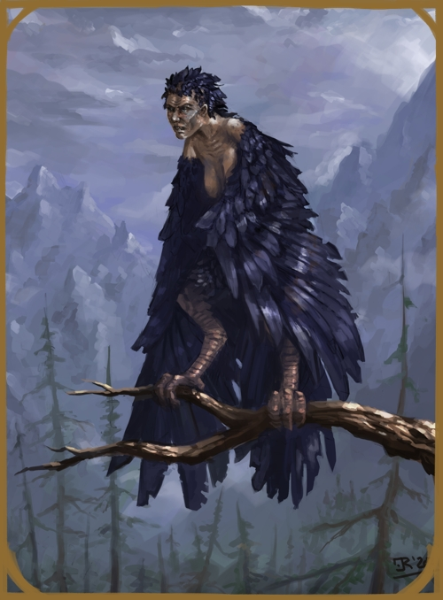

CRAVEN HARPY - K'WA-EK
MEDIUM HUMANOID

The crow-feathered craven harpies, known in their own language as the k'wa-ek, are humanoids
with the torso and face of an older human female, with the feathered and scaled limbs of a crow.
They prey upon smaller creatures than themsleves or small travelling parties and have an
intense hatred for anything prettier than themselves, which with their mottled and rotting
feathers and hunched bodies, is quite a lot.
K'WA-EK CULTURE
K'wa-ek live in gatherings of nests, often at the edges of forests or in areas with high
cliffs, be it ocean-side to barren wastes. Due to being female only in body, craven
harpies are a matriarchal society with their eldest being the leader of the gathering
until she is killed, often by a younger harpy wishing to take over. Craven harpies
will also specifically hunt other humanoids, usually humans, to kill their young females
out of jealousy and steal the young males for pleasure. While not needing males to reproduce,
they still enjoy the act to a great degree.
K'WA-EK RELIGION
While craven harpies hate most things, their natural state still nonetheless has them in
respect of the great air beings such as air elemental lords, couatles and lillends.
RELIGION - SEL'TYA, AIR ELEMENTAL LORD
| Status | Name | Realms |
|---|
| Prime Elemental | Sel'tya | Winds/Air |
K'WA-EK DIMORPHISMS
Craven harpies are a fully female species who reproduce by egg hatching and therefore
have no dimorphisms.
ADULT
GENERAL ATTRIBUTES
| AGE | HEIGHT | SIZE | SIGHT |
| 8-30 | ~5'11'' | Medium | -/6/1 |
MOVEMENT
| RUNNING | CLIMBING | SWIMMING | FLYING |
| 4 - Good | 2 - Rough | 1 - Rough | 8 - Good |
ABILITY SCORES
| STR | VIT | CON | AGI | DEX | INS | INT | WILL | WIS | CHA | BEA |
| 6 | 6 | 5 | 7 | 3 | 6 | 5 | 5 | 5 | 4 | 4 |
COMBAT ABILITY
| WOUNDS | INITIATIVE | ATTACK (MELEE) | ATTACK (RANGED) | MIGHT |
| 6 | 12 | 6 | 4 | 6 |
| DODGE | PARRY | DAMAGE | NAT. ARMOUR | PRESENCE (POWER) | PRESENCE (BEAUTY) |
| 6 | 2 | 2 | 1 | 5 | 4 |
NATURAL WEAPONS
| WEAPON | TYPE | MIGHT | DAMAGE | ADDITIONAL |
| Talon | Primary | +3 | +2 | - |